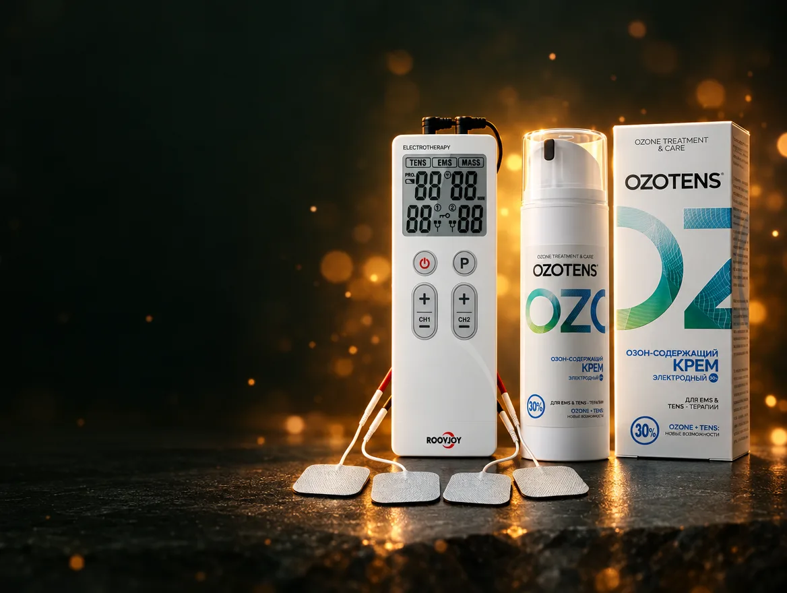

ТЭНС-прибор
Формирует электрические импульсы. Режимы и параметры зависят от модели прибора.
Прибор в каталогеМетод ОЗОТЭНС
ТЭНС расшифровывается как чрескожная электронейростимуляция. В описании ОЗОТЭНС к ТЭНС-прибору и фигурному электроду добавлен электродный крем OZOTENS 30%.

Формирует электрические импульсы. Режимы и параметры зависят от модели прибора.
Прибор в каталогеПодключается к прибору и передаёт импульсы через контакт с кожей. В каталоге собраны электроды разных форм и размеров.
Виды электродовOZOTENS 30% указан в описании метода как компонент для электродов. На упаковке и в каталоге его можно сверить по артикулу 5T15.
Крем в каталогеВ разделе «Документы» собраны независимые рекомендации и сведения о патенте.
Есть противопоказания. Применение обсудите с врачом и сверяйте с инструкцией производителя именно к вашей модели прибора и электрода.